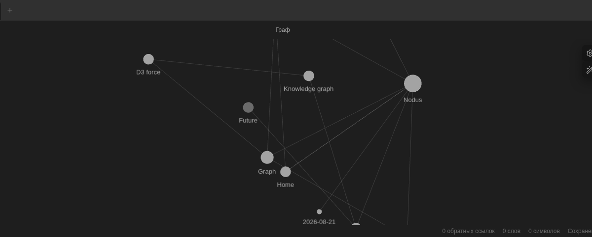
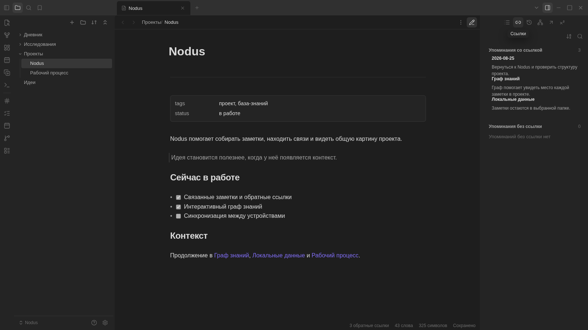
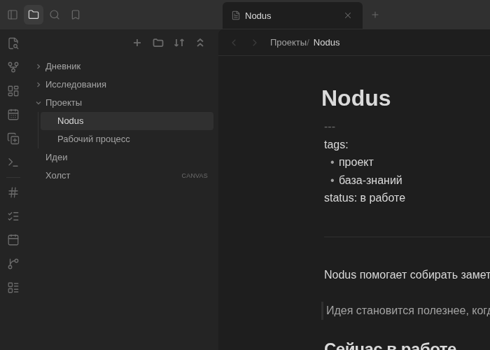
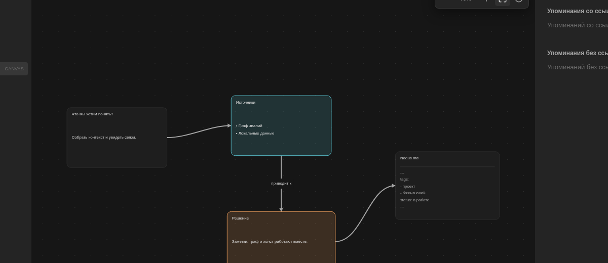
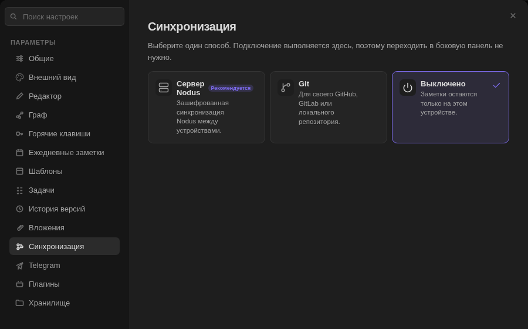
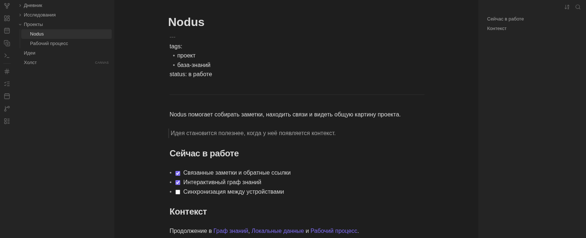
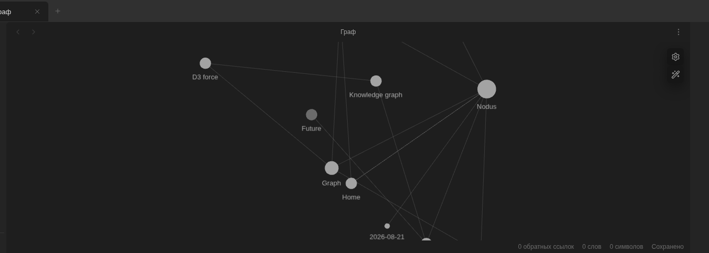
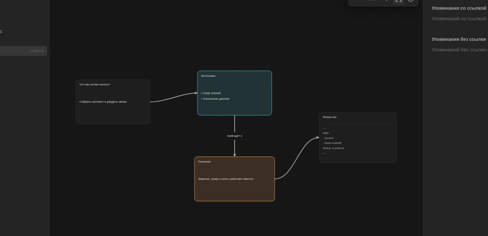

Связывайте идеи
Вики-ссылки, бэклинки и граф собирают связанные заметки в единую карту.

Приложение для заметок, исследований и личной базы знаний.

Сохраняйте идеи, связывайте их с источниками и превращайте разрозненные записи в понятную личную систему.
Вики-ссылки, бэклинки и граф собирают связанные заметки в единую карту.

Заметки хранятся обычными .md файлами в выбранной вами папке.

Собирайте карточки, заметки, ссылки и группы на свободном холсте.

Работайте локально, через Git или сервер Nodus.

Работайте с заметками и возвращайтесь к прошлым версиям.

Открывайте заметки прямо на карте связей.

Собирайте ход рассуждения в свободном пространстве.

Nodus работает с выбранной вами папкой и не требует переносить мысли в закрытую систему.
Выберите папку и начинайте писать. Локальные заметки доступны без интернета и внешнего сервиса.
Открывайте и редактируйте заметки другими программами. Ваш архив не зависит от судьбы Nodus.
Nodus распространяется по AGPL-3.0. Исходники, архитектура и история изменений доступны на GitHub.
Windows 10 и 11 · x64
Apple Silicon · ARM64
x86_64 · AppImage, DEB или RPM
В выбранной вами папке на компьютере. Заметки хранятся в обычных Markdown-файлах, вложения лежат рядом, а служебные данные Nodus находятся внутри самого хранилища.
Нет. Локальная работа полностью доступна без аккаунта. Синхронизация подключается отдельно, только если она вам нужна.
Да. Хранилище Obsidian уже состоит из Markdown-файлов, а экспорт Notion можно преобразовать встроенным импортом. Перед большим переносом сохраните резервную копию.
Для синхронизации можно использовать Git. Серверный режим передаёт содержимое без сквозного шифрования, поэтому используйте только сервер, которому доверяете.
Сборка имеет ad-hoc подпись и не нотарифицирована Apple. После первой попытки запуска разрешите приложение в разделе «Конфиденциальность и безопасность».